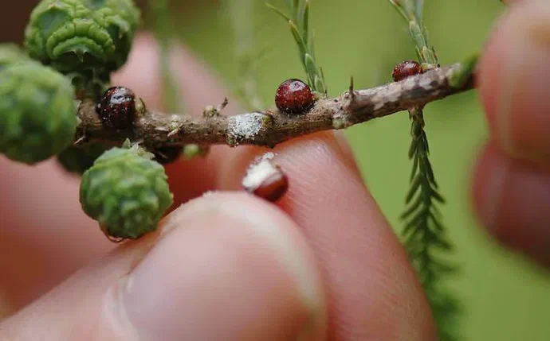
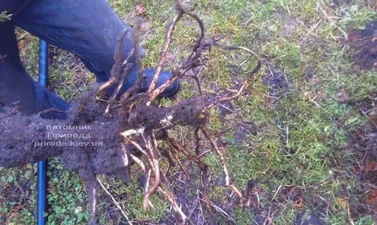
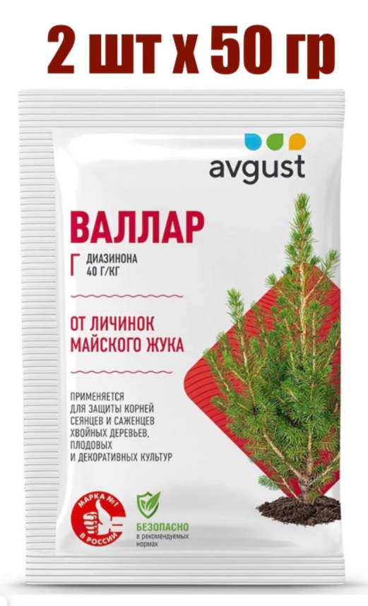

Вредители
Туевый лубоед (Phloeosinus thujae)
Мелкий жук из семейства долгоносиков (Curculionidae), подсемейства короедов (Scolytidae), который наносит серьёзный вред туям.
Как выглядит: очень маленький жук размером 1,5–2 мм. Тело тёмно-коричневое или чёрное. У самцов на надкрыльях есть относительно крупные зазубренные зубцы. Личинки безногие, с серповидно изогнутым телом и мозолевидными подушечками; голова склеротизированная и темнее тела.

Туевый лубоед. Фото: Udo Schmidt, Wikimedia Commons, CC BY-SA 2.0
Как развивается: весной самки протачивают ходы под корой туи и после оплодотворения откладывают яйца. Личинки прокладывают собственные галереи, питаясь заболонью и заполняя ходы опилками и экскрементами. Затем личинка окукливается, и из куколки выходит взрослый жук. Молодые особи питаются молодыми побегами и лубяными волокнами под корой.
Чем опасен: повреждения могут привести к отмиранию отдельных веточек или к полной гибели дерева. Хвоя сначала становится соломенной, затем буреет. Особенно опасно сочетание тёплого апреля и холодного мая: вредитель продолжает питаться, а корни из-за ночных заморозков не обеспечивают растение достаточным питанием.
Важно: лубоеды могут атаковать не только ослабленные, но и здоровые растения, особенно в первый год после посадки. Риск повышается при замокании или пересушивании корневой системы, а также после заморозков.
Профилактика:
- Выбирайте здоровые саженцы без видимых повреждений и отверстий на стволе.
- Обеспечьте правильный полив, подкормку и хороший дренаж.
- Регулярно осматривайте растения, особенно весной.
При обнаружении вредителя: опрыскивайте инсектицидами системного действия. Обработки проводят ранней весной при температуре +10…+15 °C, с интервалом примерно три недели до конца сезона. Чередуйте препараты с разными действующими веществами, чтобы у вредителя не выработалась устойчивость.
При сильном поражении: иногда рекомендуют уничтожить поражённое дерево вместе с вредителем, чтобы защитить соседние растения.
Важные рекомендации:
- Не путайте повреждения лубоедов с грибковыми заболеваниями или механическими повреждениями.
- При покупке новых саженцев тщательно их осматривайте.
- Не допускайте застоя воды, обеспечьте хороший дренаж и не загущайте посадки.
- При признаках поражения не затягивайте: обратитесь к фитопатологу или агроному, чтобы подобрать препараты и схему обработок.
Препарат «Алатар»: ссылка на препарат на Озоне.

Нажмите на фото — откроется страница препарата на Озоне
Тля
Признаки: липкий налёт, скрученные побеги, мелкие насекомые на ветвях.
Что делать: смыть тлю струёй воды, при сильном поражении обработать инсектицидом по инструкции.
Ложнощитовка
Как распознать: взрослая самка имеет довольно характерный вид: тело сильно выпуклое, почти шаровидное, размером примерно 3–3,5 мм. Окрас варьируется от желтовато-коричневого до тёмно-коричневого или каштанового. Сверху она покрыта круглым, гладким и блестящим хитиновым куполом.
.webp)
Другие признаки поражения:
- На ветках появляются крупные жёлтые или желтовато-коричневые выпуклые шарики.
- На хвое и ветвях образуется обильная липкая медвяная роса.
- На этой липкой субстанции со временем развивается сажистый грибок — появляется густой чёрный налёт.
- Хвоя тускнеет, желтеет, может преждевременно опадать. При сильном поражении отдельные ветви усыхают.
- Если аккуратно раздавить живую самку, она выделит жидкость.

Важное отличие от настоящей щитовки: у ложнощитовки выпуклое тело (полусфера), а у щитовки — более плоский круглый диск с выпуклым центром. К тому же ложнощитовка заметно крупнее.
Какой вред наносит: ложнощитовка — сосущий вредитель. Она прикрепляется к побегам, хвое или коре и высасывает из растения питательные соки. Это нарушает обменные процессы: туя хуже растёт, хвоя теряет цвет, отдельные ветви усыхают, а при масштабном поражении растение может погибнуть. Кроме того, липкие выделения создают благоприятную среду для сажистых грибков, которые дополнительно ухудшают внешний вид и физиологию растения.
Особенность размножения: у туевой ложнощитовки партеногенетическое размножение — самки откладывают яйца без участия самцов. За год развивается одно поколение: взрослые самки появляются весной (апрель–май), откладывают 500–600 яиц, из них в конце июня — начале июля выходят подвижные личинки-бродяжки. Они расселяются по растению, а осенью перемещаются на однолетние побеги и зимуют.
Как бороться:
- Внимательно осматривайте растения. Регулярно проверяйте туи, особенно в период активности вредителя (апрель–июнь, время отрождения личинок). Именно в фазу выхода личинок обработки инсектицидами дают максимальный эффект.
- Используйте системные инсектициды. Поскольку вредитель защищён куполом, нужны препараты, которые проникают в ткани растения и действуют контактно-кишечно. Подойдут, например, «Актара», «Конфидор», «Калипсо». Обработку проводите по инструкции, при необходимости повторите.
- Чередуйте препараты. При регулярных обработках одним и тем же средством у вредителя может развиться устойчивость. Поэтому меняйте препараты с разным действующим веществом (например, в один сезон неоникотиноиды, в следующий — фосфорорганические соединения).
- Проводите механическую очистку. Аккуратно удаляйте сильно поражённые ветви — это снизит общую нагрузку.
- Соблюдайте агротехнику. Здоровое, правильно ухоженное растение устойчивее к вредителям. Следите за поливом, не допускайте загущения кроны, обеспечьте хорошую циркуляцию воздуха.
Препарат «Алатар»: ссылка на препарат на Озоне.
Нажмите на фото — откроется страница препарата на Озоне
Майский хрущ
Майский хрущ, и особенно его личинка, — серьёзная угроза для туй. Взрослые жуки и личинки вредят растению по-разному.
.webp)
Взрослые жуки: в период лёта, обычно в мае, питаются молодой хвоей, почками и побегами. Это ослабляет растение: хвоя желтеет, побеги деформируются, общий вид туи ухудшается. Серьёзного фатального урона от одних только взрослых особей обычно не бывает.
Личинки — главная опасность: они живут в почве 3–4 года. Сначала питаются гумусом и тонкими корешками, а по мере роста переходят на более толстые корни. Личинка способна за один день объесть все корни двухлетнего дерева. В результате туя начинает хуже усваивать воду и питание, отстаёт в росте, хвоя буреет, сохнет и опадает. В запущенных случаях растение может погибнуть.

Агротехнические и профилактические меры:
- Мульчирование.
- Привлечение естественных врагов: ежи, грачи, скворцы и дрозды питаются личинками и взрослыми жуками.
- Посадка растений-репеллентов: в приствольных кругах или по периметру посадок можно высевать белый клевер, люпин, горчицу и бузину. Белый клевер также обогащает почву азотом, что дополнительно отпугивает личинок.
- Регулярное рыхление и перекопка: поздней весной и летом личинки держатся в верхних слоях почвы на глубине 20–30 см. Перекопка помогает обнаружить и собрать их вручную.
Химические средства: против личинок в почве применяют гранулированные инсектициды «Валлар», «Террадокс» и «Землин». Их раскладывают в лунки при посадке или равномерно распределяют по поверхности приствольного круга с последующей заделкой.
Против взрослых жуков в период лёта кроны опрыскивают системными инсектицидами: неоникотиноидами «Актара», «Биотлин», «Искра Золотая» и «Батрайдер». Обработку лучше проводить вечером в безветренную погоду.
Несколько советов:
- Не затягивайте: как только заметили увядание без явной причины или побурение хвои, сразу принимайте меры.
- Оценивайте масштаб: при единичных случаях хватит агротехники и биопрепаратов, при массовом распространении без инсектицидов не обойтись.
- Комбинируйте методы, например мульчирование, биопрепарат и ручной сбор при рыхлении.

Нажмите на фото — откроется страница препарата на Озоне